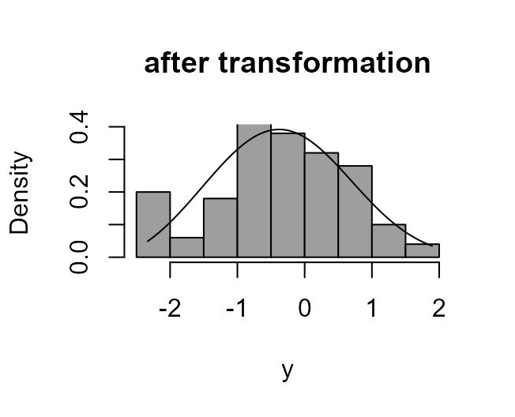

Chapter 2: Transformation Of Variable
Paul Northrop
2020-09-15
Source:vignettes/stat0002-ch2d-box-cox-transformation-vignette.Rmd
stat0002-ch2d-box-cox-transformation-vignette.RmdThe vignette involves concepts that we won’t cover until Chapters 4 and 5 of the course: the probability density function (p.d.f.) of a continuous random variable and p.d.f.s of the normal and exponential distributions. For the purpose of this vignette we just need to appreciate that and that skewness (asymmetry) in the p.d.f. will tend to be reflected by skewness in data sampled from these distributions.
Suppose that we are provided with data, \((x_1, \ldots, x_n)\) say, relating to a variable \(X\) and a question of interest concerning some aspect of this variable. Our task is to analyse these data in order to try to answer the question. Naively, we may think that we must perform our calculations using \((x_1, \ldots, x_n)\), but this is not the case. It can be perfectly acceptable to analyse instead \((y_1, \ldots, y_n)\), where \(y_1 = g(x_1), \ldots, y_n = g(x_n)\), provided that the function \(g\) used to transform \(x_i\) into \(y_i\) is such that our results can be translated back to answer the original question. Typically, \(g\) is an invertible continuous function. The transformations that we have used in lectures: power and logarithmic transformations have these properties.
Your initial reaction may be that this seems like cheating: indeed some students have already suggested this to me. However, we do this kind of thing in mathematics all the time to simplify problems. We use transformation of variable (perhaps calling it substitution) to: solve polynomial equations; solve systems of equations; perform differentiation (e.g. the chain rule); transform a difficult integral into one that is easier, or that we have solved before; solve differential equations.
There can be benefits to working with \((y_1, \ldots, y_n)\) instead of \((x_1, \ldots, x_n)\). The methods that we use to perform statistical inference (i.e. to analyse data to infer answers to questions) are often based on assumptions about the behaviour of the data. For example, we may assume that the data have been sampled from a particular probability distribution, e.g. a normal distribution, or that the mean of one variable of interest is linearly related to the value of another variable. These assumptions can be convenient because they lead to methods of analysis that are simple, convenient and well-understood. For more information and examples see Data transformation.
We don’t need to believe that these assumptions are exactly correct, but we should appreciate that if they are very far from being correct then our inferences may be misleading. If, for example, it seems clear from a plot of \((x_1, \ldots, x_n)\) that the variable \(X\) has a distribution that is strongly skewed then assuming that \((x_1, \ldots, x_n)\) have been randomly from a normal distribution (which is a symmetric distribution) may be a bad idea. However, perhaps \(\ln X\), for example, is much closer being normally distributed than \(X\), or at least seems closer to being symmetrically distributed. If we use a method that is intended to work well for data sampled randomly from a normal distribution then it is better to analyse \((\ln x_1, \ldots, \ln x_n)\) than \((x_1, \ldots, x_n)\).
Please note that transformation of data is by no means the only way to solve the problem that data do not behave in a way that is consistent with a convenient simple model. In particular, note that although the normal distribution is used in many areas of Statistics there are many instances where methods based on other distributions are more appropriate.
If we do wish to transform data then we need to consider which transformation to apply. The following family of power transformations can be helpful, provided that the data are positive. If they are not we could first add a constant to the data to achieve this property, or use a similar transformation (Yeo and Johnson (2000)) that does not require the data to be positive.
Box-Cox transformation
The transformation that we have considered in the lectures is called a Box-Cox transformation, after the authors of a paper (Box and Cox (1964)) in which this type of transformation was studied extensively. (The names of the authors are a very pleasing coincidence, see Box and Cox.)
In it’s simplest form a Box-Cox transformation of \(x\) to \(y\) is given by \[ y = \left. \begin{cases} \displaystyle\frac{x^\lambda - 1}{\lambda}, & \text{for } \lambda \neq 0, \\ \ln (x), & \text{for } \lambda = 0. \\ \end{cases} \right. \] The inverse of this transformation is \[ x = \left. \begin{cases} \displaystyle(\lambda y + 1)^{1 / \lambda}, & \text{for } \lambda \neq 0, \\ \exp(y), & \text{for } \lambda = 0. \\ \end{cases} \right. \] Firstly, we consider how we could use a Box-Cox transformation to transform data relating to one variable so that they appear to be more symmetrically distributed. In Transformation to Approximate Linearity we use Box-Cox transformation to make the apparent relationship between two variables closer to being linear.
Transformation to Approximate Symmetry
The normal (or Gaussian) distribution (Section 5.7 of the STAT0002 notes) is a symmetric probability distribution. If \(Y = \ln X\) has a normal distribution then \(X\) has a log-normal distribution. This is a convenient example to study because if we know that we have a sample from a log-normal distribution then taking logs of the data produces a sample from a normal distribution.
Log-normal distribution
The following code: simulates a sample of size 100 from a log-normal distribution; draws a histogram of these data with the log-normal p.d.f. superimposed; and then produces a similar plot after transforming using a log transformation (lambda = 0).
> library(stat0002) Loading required package: rpanel Loading required package: tcltk Package `rpanel', version 1.1-4: type help(rpanel) for summary information > x <- rlnorm(100) > boxcox_plot(x, density_fn = dlnorm, main = "data and true density function") > boxcox_plot(x, density_fn = dlnorm, lambda = 0, main = "after transformation")

- I suggest that you try different values of
lambdaand look at the result in the plot.
In this example we know which value of \(\lambda\) should produce approximate symmetry. When confronted with real data we won’t be in this position. However, we could look at a plot of the original data and judge whether we need to make the data less positively skewed (use \(\lambda < 1\)) or less negatively skewed (use \(\lambda > 1\)), and then use trial-and-error.
There is also a more automatic way to suggest a suitable value for \(\lambda\): we try a number of values of \(\lambda\) and summarise how well a normal distribution fits the transformed data using the value of something called a profile log-likelihood. Don’t worry about what this means, just appreciate that larger values of the profile log-likelihood suggest a better fit. This produces a ‘best guess’ at the value of \(\lambda\). We can also produce a confidence interval for \(\lambda\). We don’t study confidence intervals in detail in STAT0002. The idea is that this interval is a measure of uncertainty about the value of \(\lambda\).
The function boxcox in the MASS package (Venables and Ripley (2002)) produces plot of the profile log-likelihood against \(\lambda\), with a 95% confidence interval for \(\lambda\). The ~ 1 bit in the formula notation x ~ 1 below is specifying that there is no other variable to consider in addition to x. In Transformation to Approximate Linearity below we will extend this notation to deal with the case when consider two variables.
> library(MASS, warn.conflicts = FALSE) > res <- MASS::boxcox(x ~ 1)

> # Find the value of lambda with the largest profile log-likelihood > res$x[which.max(res$y)] [1] 0.1010101
As we expect the ‘best’ value of \(\lambda\) is close to zero and zero lies within the confidence intervals for \(\lambda\). Typically, we choose a simple value of \(\lambda\), e.g. a simple fraction or whole number, that is close to the ‘best’ and lies within the confidence interval.
Exponential distribution
An exponential random variable (Section 5.6 of the STAT0002 notes) exhibits strong positive skewness. Therefore, if we wish to Box-Cox transform data that have been sampled from an exponential distribution in order to make it more symmetric then we should use \(\lambda < 1\). We can use the MASS function boxcox to help us to decide which value of \(\lambda\) we could use. However, an exponential distribution is a special case of a gamma distribution (we don’t study this in STAT0002) and it has long been known (Wilson and Hilferty (1931)) that a cube root transformation tends to make a gamma random variable behave rather like a normal random variable. Therefore, \(\lambda = 1/3\) might work well.
> x2 <- rexp(100) > boxcox_plot(x2, density_fn = dexp, main = "data and true density function") > boxcox_plot(x2, density_fn = dexp, lambda = 1 / 3, main = "after transformation") > boxcox(x2 ~ 1) > abline(v = 1/3, col = "red")

We find that \(\lambda = 1/3\) does work well and that the ‘best’ value, calculated by boxcox is close to 1/3.
- Again, you could see the effects of using different values of
lambda.
A triangular distribution
We consider a simple probability distribution with p.d.f. \[
f_X(x) = \left.
\begin{cases}
2\,x, & \text{for } 0 < x < 1, \\
0, & \text{otherwise}. \\
\end{cases}
\right.
\] i.e. a triangle with base along (0,1). The functions dtri and rtri in the following code are used to calculate this p.d.f. and to simulate from this distribution, respectively. The latter uses the inversion method of simulation. See the Stochastic simulation video for details.
> # A function to define the p.d.f.
> dtri <- function(x) {
+ return(ifelse(x > 0 & x < 1, 2 * x, 0))
+ }
> # A function to simulate from this distribution
> rtri <- function(n = 1) {
+ return(sqrt(runif(n)))
+ } In this example it can be shown that using \(\lambda = 2\) will produce a random variable whose p.d.f. is constant (and equal to 2) over the range (-1/2, 0), that is, we produce a uniform U(-1/2, 0) random variable (see Section 5.5 of the STAT0002 notes).
- Can you prove that if a random variable \(X\) has the triangular p.d.f. above then \(X^2\) has a standard U(0,1) distribution and hence that \((X^2-1)/2\) has a U(-1/2,0) distribution?
We simulate same data from this triangular distribution and show that using \(\lambda = 2\) does indeed produce a density that is flat, and therefore symmetric.
> x3 <- rtri(200) > boxcox_plot(x3, density_fn = dtri) > boxcox_plot(x3, density_fn = dtri, lambda = 2)

Interestingly the boxcox function suggests a values of \(\lambda\) that is close to 1.5 and the resulting transformed density is not particularly close to being symmetric. This is because the objective of the boxcox function is to seek a Box-Cox transformation for which the transformed density is as close as possible to being normal. It can’t do this very well in this case but we know that \(\lambda = 2\) produces a density that is perfectly symmetric, although it is a uniform density, not a normal density.
> boxcox(x3 ~ 1, lambda = seq(0, 4, 1 / 10)) > boxcox_plot(x3, density_fn = dtri, lambda = 1.5)


Transformation to Approximate Linearity
In Chapter 8 of the STAT0002 notes) we study simple linear regression. In short, the idea is to suppose that the distribution of a response variable \(Y\) has a mean that is a linear function of the observed value \(x\) of an *explanatory variable \(X\). Alternatively, we could think of this as \(Y\) being a linear function of \(x\) plus some random error that has a zero mean.
2000 US Presidential Election Data in Florida
Consider the following plot of the percentage of the vote obtained by the candidate Pat Buchanan (\(Y\)) against the total population (in thousands of people) of the county (\(x\)) in each of the 67 counties in Florida.
> xlab <- "population (1000s)" > ylab <- "Buchanan's % vote" > y <- 100 * USelection$buch / USelection$tvot > x <- USelection$npop / 1000 > plot(x, y, pch = 16, xlab = xlab, ylab = ylab)

Clearly \(Y\) is not linearly related to \(x\). In Section 8.4 of the notes we consider the use of transformation in the setting of simple linear regression. If we are hoping to use a linear regression model then one of the most important considerations is whether the relationship between \(Y\) and \(x\) is approximately linear. If it is not then one approach is to consider transforming \(Y\) and/or \(x\). In the we saw that we could choose these transformations using trial-and-error.
In Smith (2002) the author uses \(\sqrt{Y}\) instead of \(Y\) and \(\log(x)\) instead of \(x\). In a lecture we found that this did indeed produce a relationship that looked much closer to being linear. Here we also use \(\log(x)\) instead of \(x\) and we use the boxcox function to suggest a Box-Cox transformation for \(y\). [It is possible to look to look simultaneously for the ‘best’ Box-Cox transformations of both \(Y\) and \(x\), but the boxcox doesn’t provide this option.] In the regression setting the boxcox function seeks a transformation of \(Y\) for which the distribution of the random error is as close as possible to being normal.
> boxcox(y ~ log(x))

Here the plot suggests that we might also transform \(Y\) using \(\log(Y)\). The plot on the left below is of \(\log(Y)\) against \(\log(x)\) (we plot both variables on log scales). The plot on the right is of \(\sqrt{Y}\) against \(x\).
> xlab <- "population (1000s)" > ylab <- "Buchanan vote" > plot(x, y, pch = 16, log = "xy", xlab = xlab, ylab = ylab) > ylab <- expression(sqrt(Buchanan~vote)) > plot(x, sqrt(y), pch = 16, log = "x", xlab = xlab, ylab = ylab)

In both plots the relationships between the variables is closer to being approximately linear than in the original plot. We might argue that the plot on the left looks lightly better than the other plot and therefore we may question why Smith chose \(\sqrt{Y}\) rather than \(\log Y\). However, the relationship between \(Y\) and \(x\) is far from the whole story. Smith’s model was much more complicated than this, and he has to worry about other assumptions, in addition to linearity.
References
Box, G. E. P., and D. R. Cox. 1964. “An Analysis of Transformations.” Journal of the Royal Statistical Society. Series B (Methodological) 26 (2): 211–52. https://doi.org/10.1111/j.2517-6161.1964.tb00553.x.
Smith, R. L. 2002. “A Statistical Assessment of Buchanan’s Vote in Palm Beach County.” Statist. Sci. 17 (4): 441–57. https://doi.org/10.1214/ss/1049993203.
Venables, W. N., and B. D. Ripley. 2002. Modern Applied Statistics with S. Fourth. New York: Springer. http://www.stats.ox.ac.uk/pub/MASS4.
Wilson, E. B., and M. M. Hilferty. 1931. “The Distribution of Chi-Square.” Proc. Natl. Acad. Sci. USA 17 (12): 684–88. https://doi.org/10.1073/pnas.17.12.684.
Yeo, I.-K., and Richard A. Johnson. 2000. “A New Family of Power Transformations to Improve Normality or Symmetry.” Biometrika 87 (4): 954–59. https://doi.org/10.1093/biomet/87.4.954.